슬랙 자동 연결 시안
토큰을 복사하지 않고 슬랙의 "허용"만 누르면 연결되는 흐름을 그림으로 모았어요. "지금" 그림은 가짜 데이터의 실제 화면이고 "바뀐 뒤" 그림은 설정 창의 슬랙 카드를 브라우저에서 고쳐 흉내 낸 것이에요(앱 코드는 안 바꿨고 슬랙에도 연결하지 않았어요). 슬랙 쪽 허용 화면은 슬랙이 그리는 화면이라 그림이 없어요. 그림을 누르면 2배 크기 원본이 열려요.
사용자가 볼 것 2가지
- 버튼 문구 — 큰 버튼이
슬랙 연결(A)인지슬랙에서 허용하기(B)인지. - 옛 방식(토큰 붙여 넣기) 둘 자리 — 카드 안 접힘 링크(A)인지 ⋯ 메뉴 안(B)인지.
나머지(기다리는 중·풀림 문구·점검하기 줄)는 정해진 흐름을 그림으로 보여 드리는 거예요. 답은 "A, A"처럼 짧게 주세요.
묶음 1연결하는 흐름
처음 연결 — 지금 vs 바뀐 뒤
지금은 슬랙 개발자 화면에서 토큰을 찾아 복사해 붙여 넣어요. 바뀐 뒤는 큰 버튼 하나가 전부예요.
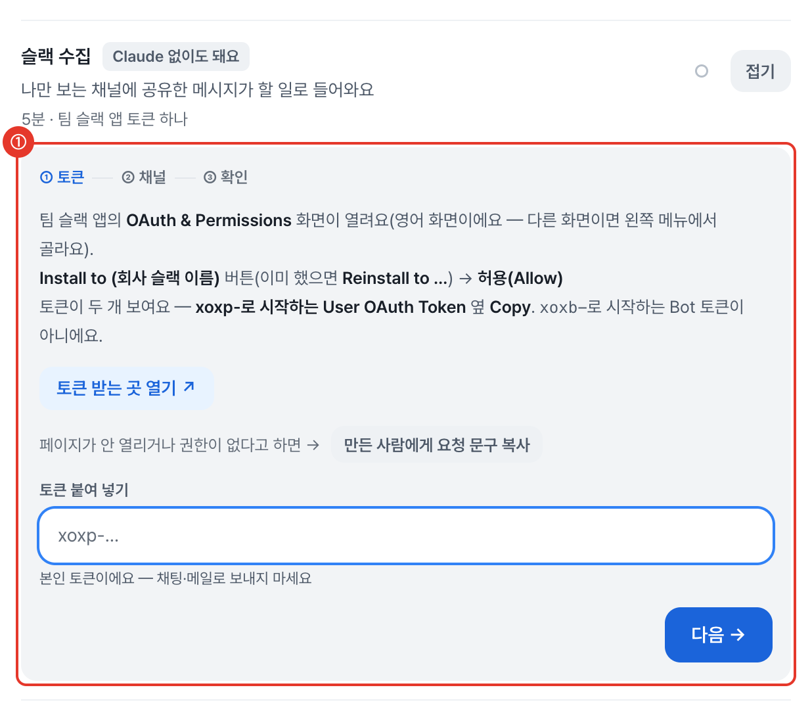
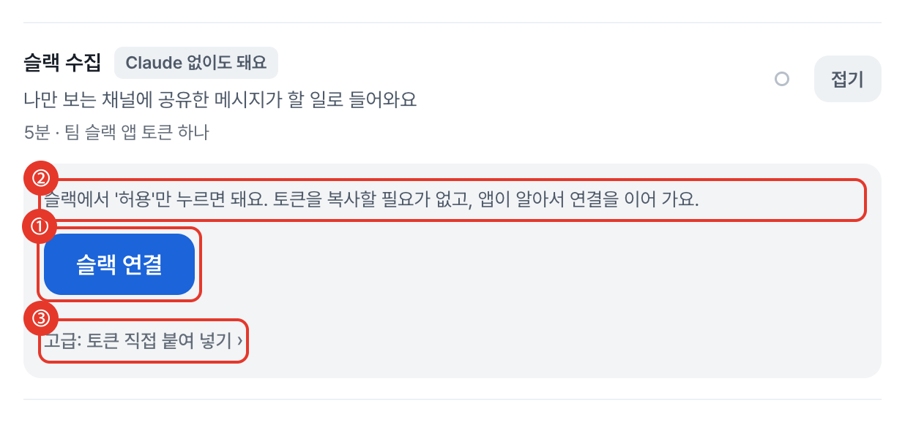
- ①
슬랙 연결큰 버튼 한 개 (파란 1차 버튼, 높이 42px) - ② 한 줄 설명: "슬랙에서 '허용'만 누르면 돼요. 토큰을 복사할 필요가 없고, 앱이 알아서 연결을 이어 가요."
- ③ 옛 방식은 아래 접힌
고급: 토큰 직접 붙여 넣기— 누르면 지금 화면이 그대로 펼쳐져요
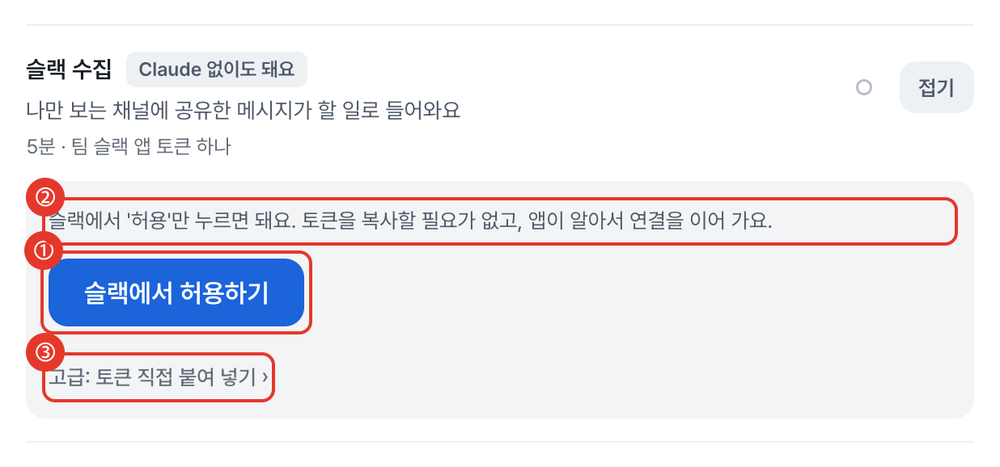
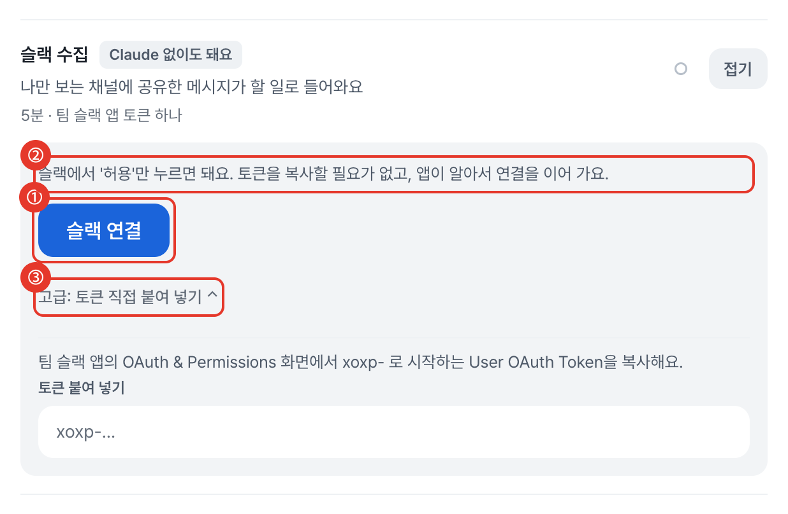
옛 방식 둘 자리 — A와 B
B · ⋯ 메뉴 안으로 숨김
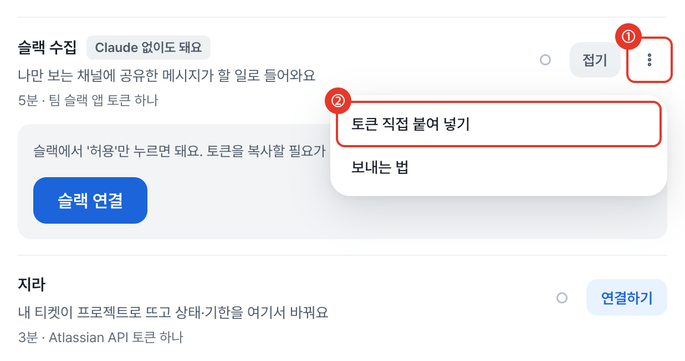
약점: 토큰 방식을 쓰려는 사람이 숨은 길을 못 찾을 수 있고, 처음 연결 카드에는 ⋯가 없어서 새로 만들어야 해요.
기다리는 중 — 라이트 · 다크 · 390px
버튼을 누르면 새 탭에 슬랙 허용 화면이 열려요. 앱에는 이 줄이 떠 있어요.
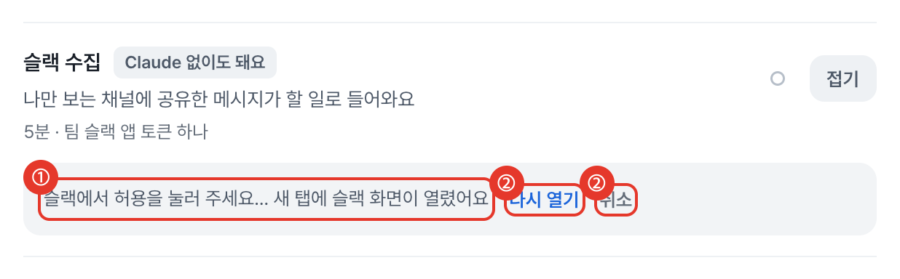
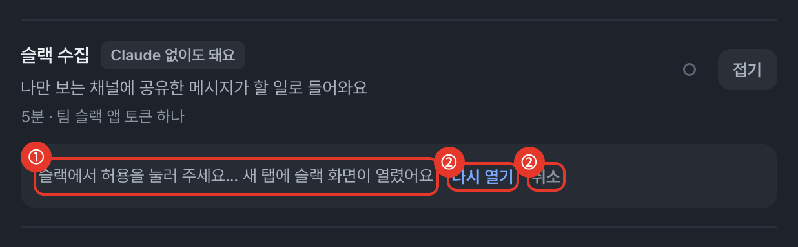
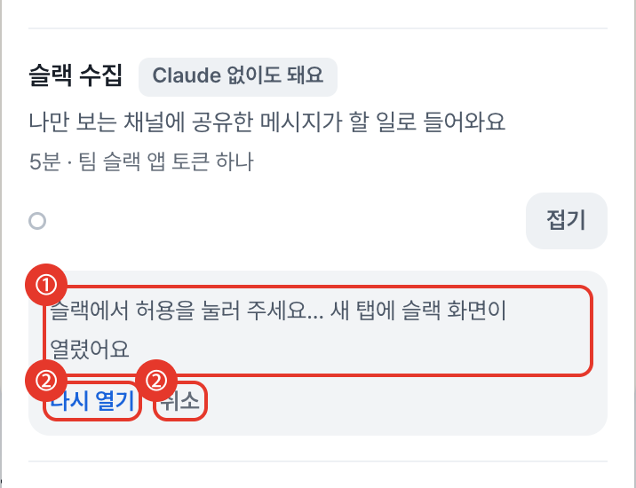
- ① "슬랙에서 허용을 눌러 주세요… 새 탭에 슬랙 화면이 열렸어요"
- ②
다시 열기(탭을 놓쳤을 때) ·취소
슬랙에서 허용한 뒤 — 완료 탭
슬랙이 돌려보내는 작은 정적 페이지예요. 앱 창으로 돌아가면 카드가 저절로 "연결됨"으로 바뀌어요.
추천: 버튼 A(슬랙 연결), 옛 방식은 카드 안 접힘 링크(A).
버튼 A 약점: 슬랙 화면으로 나간다는 말이 버튼에 없어요(바로 아래 설명 줄이 보완해요). B(슬랙에서 허용하기)는 길지만 어디로 가는지 분명해요.
답 예시: "A, A" · "B, A" · "A, B"
묶음 2연결된 뒤와 풀렸을 때 (결정 없음)
연결된 카드
지금 카드와 같은 한 줄이에요. 옛 방식 사용자는 ⋯ 메뉴에 새 항목이 하나 생겨요.
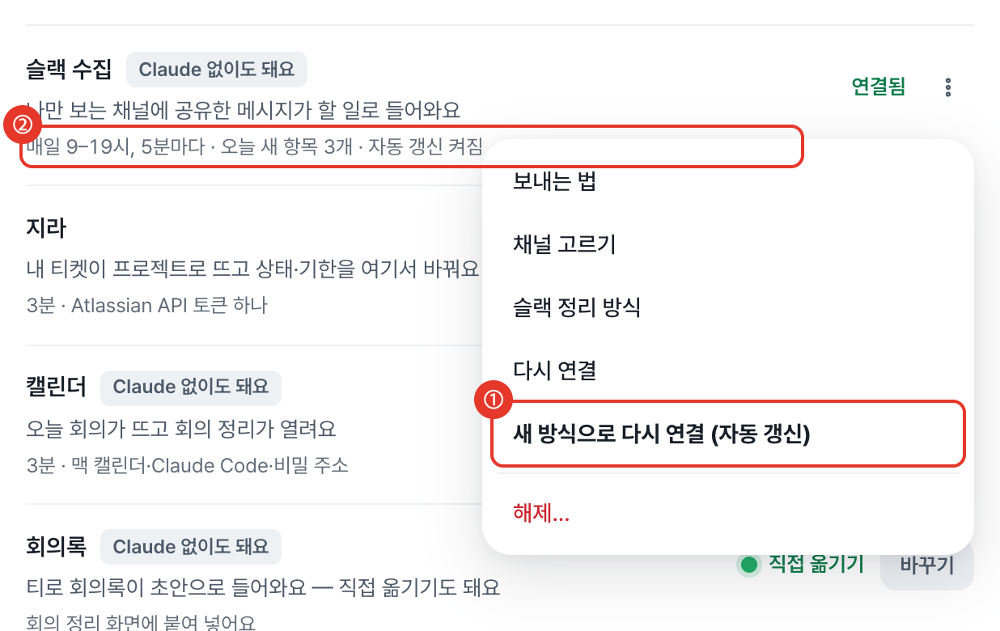
- ①
새 방식으로 다시 연결 (자동 갱신)— 옛 토큰 사용자에게만 보여요 - ② 줄에 "자동 갱신 켜짐"이 붙어요
연결이 풀렸을 때
빨간 한 줄 + 다시 연결 버튼 하나면 돼요. 토큰을 다시 찾을 필요가 없어요.
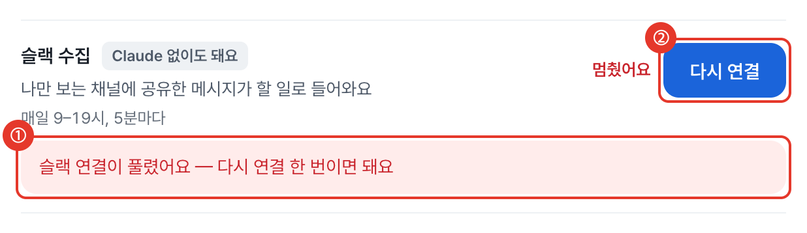
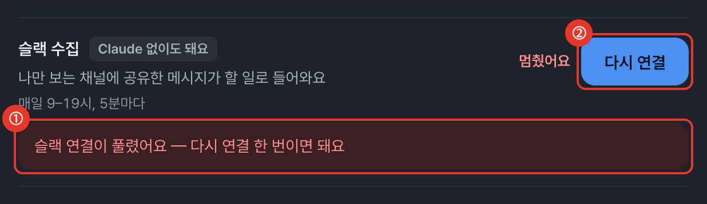
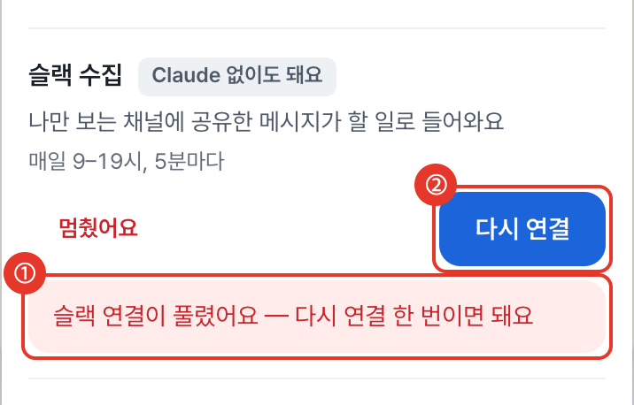
- ① "슬랙 연결이 풀렸어요 — 다시 연결 한 번이면 돼요"
- ②
다시 연결파란 버튼
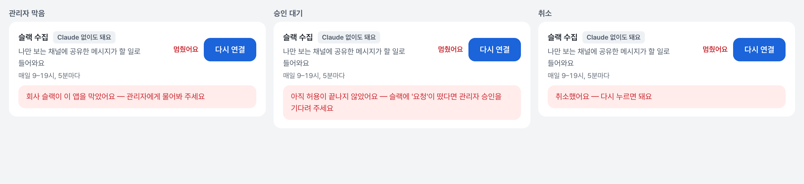
- · 회사 슬랙이 앱을 막았을 때 / 관리자 승인을 기다릴 때 / 허용 화면에서 취소했을 때 — 각각 하는 말이 달라요
설정 › 앱 › 점검하기
슬랙 연결 줄이 새 방식 상태를 말해요. 옛 방식 줄은 그대로예요.
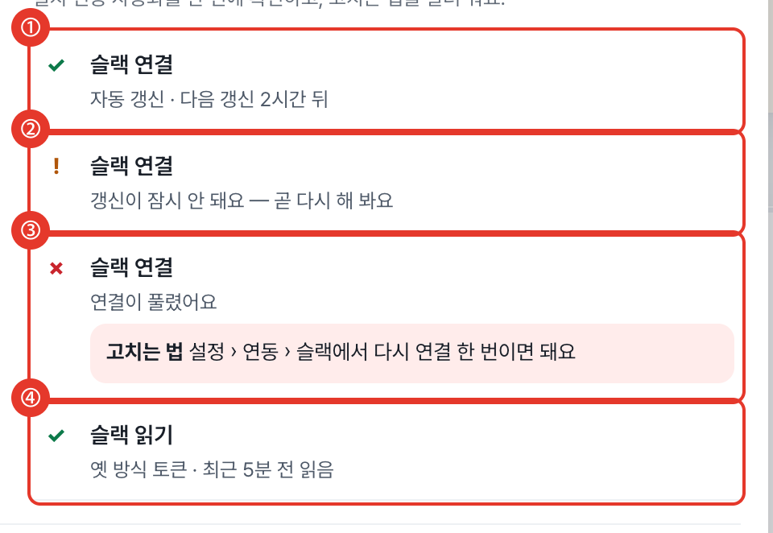
- ① ✓ 슬랙 연결 · 자동 갱신 · 다음 갱신 2시간 뒤
- ② ! 갱신이 잠시 안 돼요 — 곧 다시 해 봐요
- ③ ✗ 연결이 풀렸어요 + 고치는 법
- ④ 옛 방식 사용자는 지금과 같은 읽기 줄
확정(2026-10-01): 버튼 A(슬랙 연결), 옛 방식은 카드 안 접힌 링크(A). 명세는 docs/정리/2026-10-01-슬랙-자동-연결.md. 새 색·모양은 없고 앱의 버튼·카드·점검 목록 부품 그대로예요.